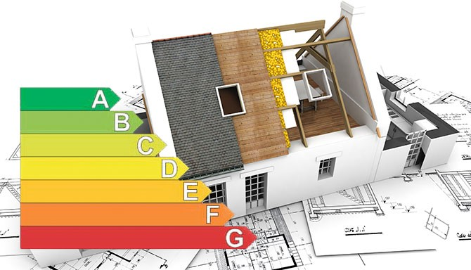

W dzisiejszych czasach coraz bardziej zyskują popularność odnawialne źródła energii, które są promowane w świadomości każdego obywatela. Głównym celem jaki przyświeca stosowanie tej technologii jest ochrona i dbanie o środowisko. Z roku na rok można zaobserwować narastające zapotrzebowanie na energię, a same prognozy jasno mówią ze nasze zasoby tradycyjne takie jak węgiel kamienny, ropa naftowa, czy gaz ziemny nieustannie kurczą się, dlatego też temat alternatywnych źródeł energii wykazuje wzrostowe zainteresowanie.
W raporcie opracowanym przez (KOBiZE) z 2018 roku można jasno zaobserwować że udział emisji CO i pyłów PM10 w ogromnym stopniu pochodzi z procesów spalania poza przemysłem, przyczyną jest zwiększenie spalania węgla kamiennego w gospodarstwach domowych.
W celu redukcji zanieczyszczeń i wprowadzeniu czystszej energii w pierwszej kolejności należy zając się modernizacją obiektów wyposażając je w odpowiednie narzędzia, które są w stanie zaopatrywać gospodarstwa w czystą, tańszą, oraz ekologiczną energią.
Konieczne jest znalezienie metody która pozwoli w najbardziej efektywny i opłacalny sposób wybrać dany sposób modernizacji bądź inwestycji w obiekcie który zużywa energię. Taką metodą jest przeprowadzenie Audytu energetycznego,
Audyt energetyczny jest ekspertyzą która w gruntowny sposób przedstawia sten techniczny budynku, oraz ocenia zużycie energii, kolejno przedstawiane są możliwe modernizacje, oraz wyłonienie najbardziej opłacalnej inwestycji która zwróci się nam możliwie jak najszybciej

 Wstęp
Wstęp
 Audyt Energetyczny
Audyt Energetyczny